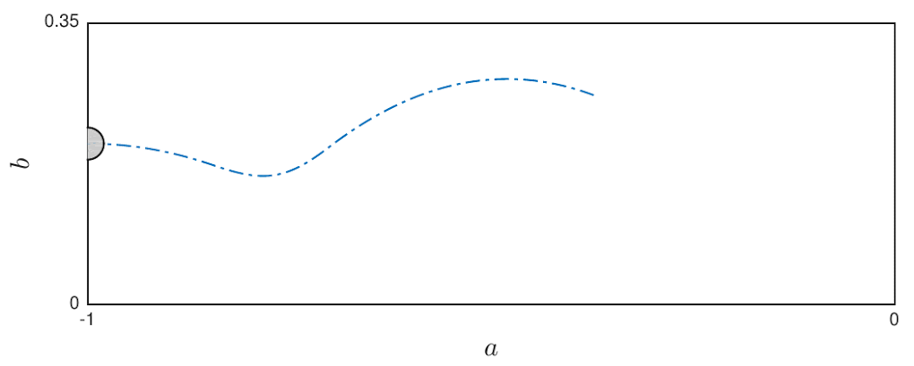
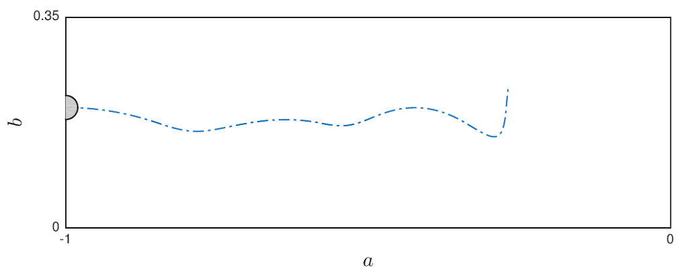
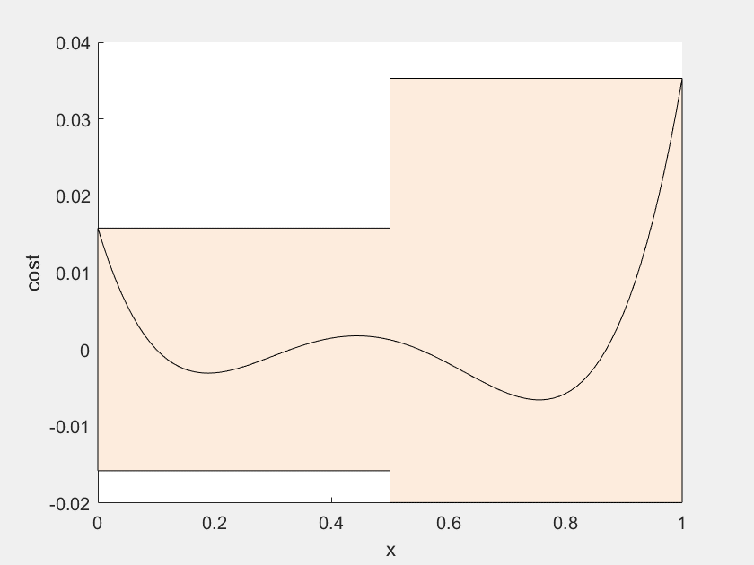

Control Synthesis for Nonlinear Optimal Control via Convex Relaxations
This work addresses the problem of control synthesis for nonlinear optimal control problems in the presence of state and input constraints.
The proposed aproach relies upon transforming the given problem into inifinite-dimensional linear program over the space of measures,
and convergence to global optima is guaranteed as degree of relaxtion goes up.
The picture shown above is an illustration of proposed method on an LQR version of the Dubins Car problem.
The blue circle indicates the given initial state, and the blue dot shows the target point.
The ground truth solution for such problem is colored in blue, and red lines are control actions generated by our method.
This work can be extended to address hybrid optimal control,
reachability analysis,
inverse optimal control, and
stochastic optimal control.


Hybrid Optimal Control With Guaranteed Global Convergence
Many dynamical systems may undergo instantaneous state changes due to satisfaction of certain state-dependent constraints.
Examples of such systems include legged robots, where the velocity of limbs changes instantaneously due to impacts with the ground.
The optimal control of hybrid systems are especially difficult to solve not only because of the discontinuity in states and controls,
but also due to the combinatorial nature of possible transition sequences.
State-of-the-art solvers struggle to find globally optimal solutions for these problems under nonliner state and input constraints.
This work focuses on extending the convex relaxation-based optimal control framework to solving hybrid systems.
By introducing measures that capture the trajectories entering and leaving each hybird modes,
the proposed method is able to find globally optimal trajectories regardless of transition sequence being potentially unknown.
As an exmpale, the proposed method is implemented to solve optimal control of a single-leg hopper, as shown in the above images.
The goal in the first image is to jump as high as possible, and the goal in the second image is to slow down from a large horizontal velocity.
Other applications include reachability analysis for hybrid systems (e.g., legged robots ).

Parallel Bernstein Algorithm for Constrained Global Optimization
In this work I developed a parallel algorithm for solving optimization problems with polynomial constraints and cost functions (a.k.a. polynomial optimization problems) using Bernstein expansion.
This approach relies upon bounding the values of polynomials in shrinking subsets of the domain (see the animation on the left),
and is able to find all global optimizers to polynomial optimization problems within polynomial time.
Such algorithm can be implemented on either multi-core CPUs or GPUs to significantly reduce computation time.
The rate of convergence of such algorithm is proved to be either linear or quadratic, depending on the problem settings,
and a practical bound on the maximum memory usage is provided.
This approach is implemented both in MATLAB (CPU) and in CUDA C++ (GPU),
and proven faster than generic methods on an array of benchmark examples
as well as in a real-world autonomous driving planning task.